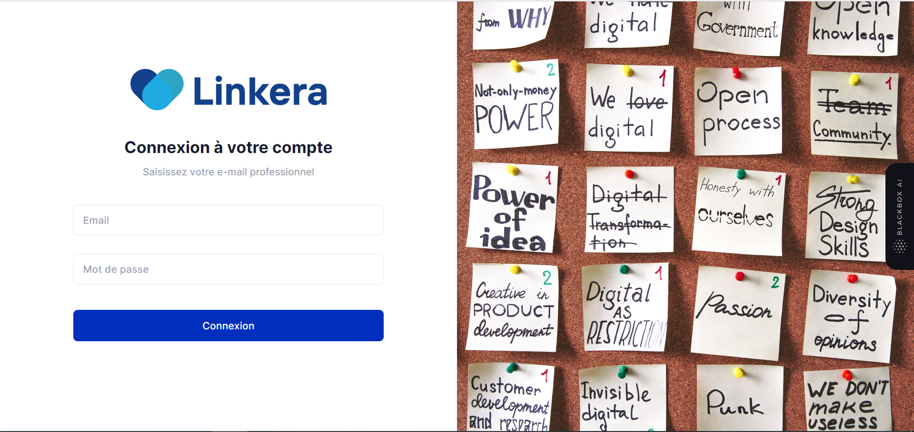
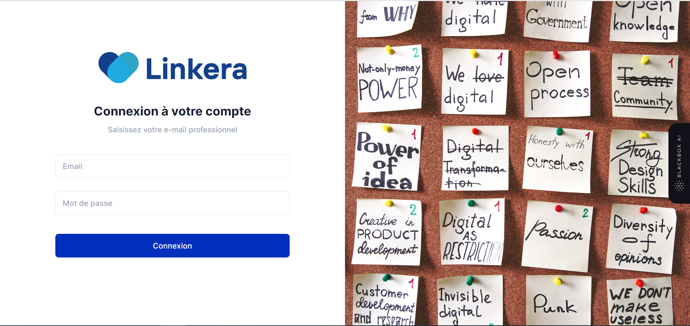
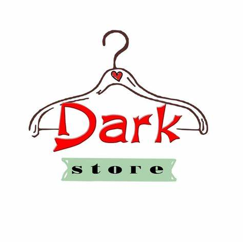

Développé avec #Symfony 6, #PHP, #MySQL, #Bootstrap, #Stripe et #EasyAdmin.
Dans ce projet e-commerce captivant, j'ai exploité la puissance de Symfony 6, la flexibilité de
Stripe, la facilité de gestion d'EasyAdmin 4 et la beauté de Twig et Bootstrap pour créer une
plateforme de vente en ligne exceptionnelle. Mon application met en valeur ma maîtrise du
développement Full Stack et mon savoir-faire en matière d'intégration de technologies avancées.
L'intégration de Stripe a transformé le processus de paiement en une expérience fluide et
sécurisée. Les clients peuvent désormais effectuer leurs achats en toute confiance grâce à la
protection des informations de paiement et à la rapidité des transactions. De plus, j'ai utilisé
le composant Mailer de Symfony pour mettre en place des notifications efficaces et réactives,
offrant ainsi une communication transparente entre la plateforme et les utilisateurs.
EasyAdmin 4 a simplifié la gestion de la boutique en ligne, en fournissant une interface
conviviale pour gérer les produits, les commandes et les clients. L'association de Twig et
Bootstrap a permis de créer des interfaces utilisateur élégantes et réactives, offrant une
expérience visuelle attrayante et intuitive.
Tout cela est soutenu par une base de données MySQL solide, garantissant la stabilité et la
fiabilité du système. Ce projet reflète ma passion pour le développement Full Stack et mon
engagement à créer des solutions innovantes pour répondre aux besoins de l'e-commerce moderne.
 

Développé avec #Codeigniter3, #Ajax, #jQuery et #MySQL. J'ai également intégré les
fonctionnalités suivantes : DataTable, Data Table Server Side,
FullCalendar, Dropzone.js, gestion de session et REST API

Dans le cadre de ce projet, j'ai créé une application e-commerce en utilisant les technologies
Angular, Express.js, MongoDB et Node.js. Cette application a été conçue pour gérer efficacement
les publications, les ventes et les utilisateurs. J'ai mis en œuvre des fonctionnalités CRUD
pour simplifier la gestion des publications et des produits. La gestion des utilisateurs est
également une composante essentielle de l'application, avec des fonctionnalités d'inscription,
de connexion et de gestion de profil utilisateur. Pour sécuriser l'accès aux fonctionnalités,
j'ai employé JWT (JSON Web Token) pour l'authentification et l'autorisation.
Pour optimiser la communication avec les utilisateurs, j'ai intégré Nodemailer pour la gestion
des e-mails liés aux ventes, confirmations de commande, etc. De plus, j'ai exploité des agrégats
pour réaliser des opérations de regroupement et d'analyse de données, améliorant ainsi la prise
de décision basée sur les informations fournies par l'application.
Afin d'assurer une expérience utilisateur fluide, j'ai mis en place des fonctionnalités de
pagination, de filtrage et de recherche, facilitant ainsi la navigation à travers les
publications et les produits. L'application résultante offre une expérience e-commerce complète
et performante, répondant aux besoins complexes de gestion tout en garantissant une expérience
utilisateur exceptionnelle.

Développement d'une application de gestion sportive permettant de gérer les matches, les équipes
et les joueurs.
Implémentation des fonctionnalités CRUD (Create, Read, Update, Delete) pour permettre la
création, la lecture, la mise à jour et la suppression des données.
Mise en place de la pagination, du filtrage et de la recherche pour faciliter la navigation et
la recherche d'informations.

J'ai contribué à la création d'une application web axée sur l'éducation, en utilisant JavaScript
natif pour développer des fonctionnalités telles que les cours en ligne, les quiz interactifs et
le suivi des progrès des étudiants.